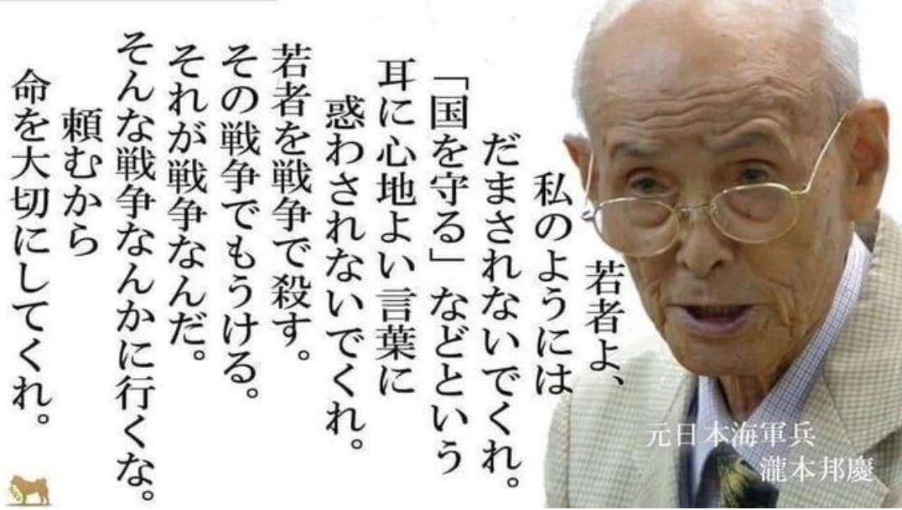

私は昭和十六年六月(一九四一年)赤紙令状により兵役に召集された。 二十四才であった。 当時日米間の対立が先鋭化し、戦争か平和か、日本は苦渋する年であった。
軍部はこの事態にいち早く呼応戦争準備に着手、兵役義務を有する我々若者に一大動員令を発令、元気な者は、総て仕事を投げ出し軍服に着替え、銃を取らねばならなかった。
この年の十二月終りに開戦となった(初め大東亜戦争とも呼ぶ)
私は船舶砲兵隊に配属された。 陸軍の輸送船に乗組み、敵の襲撃(しゅうげき)から船を守るのが任務であった。
緒戦当時米軍は極東基地フィリッピンに、英軍は難攻不落の要塞と言われたシンガポールに、蘭軍は石油宝庫のジャワ(インドネシア)の守りに駐屯していた。
これを攻める日本軍の進撃はめざましく連戦連勝、たちまち東南アジア全域を攻略した。 進駐直後輸送船隊の我々が各地に入港すると敵は捕虜になるか、退却しており極めて平穏、現地人の歓迎もあり、まるで観光気分であった。
だがしかし戦争が、そんな暢気なものでないことを、間もなく、思い知らされることになった。
一度退却した米豪軍は反撃態勢を整えガダルカナル・ニューギニア要域に新鋭大部隊を上陸させた。 日本反攻への幕あけであった。
これを迎え撃つ前線部隊へ兵力弾薬糧秣(りょうまつ)の補給は緊急を要した。
ところが敵の戦力は予想外に、強力となっており、わが輸送船団を多数の航空機を以て猛爆し、目的地到着前に撃沈しはじめた。 我が軍はこれにひるまず、次々船団を編成し出撃したが、制空権を握った敵に、如何せん、劣勢挽回はできなかった。
この方面の戦闘で日本は損害少なくなく、形勢は急速に悪化苦戦と言うより破局の様相を見せはじめた。 私はラバウルにて出撃待機中であったがこの輸送作戦には一度も参加することなく後退した。
だがこの頃日本近海から南方一帯敵潜水艦の出没しない海域はなくなった。 私も敵の魚雷攻撃を受け、二回遭難した。 一回はマニラからニューギニア、ウェワクに向け航海中であった。 船団は輸送船五隻、護衛艦二隻であった。 私の乗る船が一番大型で、北支から派遣の支援部隊約千名。 加えて武器弾薬医薬品を満載していた。
サルミ沖であったか護衛艦より『敵潜の追尾あり』との情報によって厳重警戒中、夜間先頭の本船がまず雷撃を受け左舷に三発命中轟沈であった。 後につづく船もやられた。 商船は船腹が弱い、命中すると海水が船内に奔流してくる。 船倉の乗船部隊は果たして脱出することができたであろうか。
甲板勤務のわが隊にも死傷者が出た。 魚雷沈没の時は当たった側面より海に飛び込むよう訓練されていた。(反対側は船が転舵している為、船尾のスクリューに巻き込まれる危険大)
私の隊は右舷にいた。 左舷への通路は狭い。 停電で真っ暗。 一度に多数殺到しては大混乱となる。 待ちきれずに右舷から飛び込む者もいた。 私は辛うじて左舷に出た。 その時デッキ、海面の区別はない。 浮いたと思った途端、張りめぐらされたロープが首にからまり沈没船もろとも水面下に引きずり込まれた。 もう駄目かと思った瞬間、はじかれたようにロープがはずれ自由になった体は救命胴衣のおかげで、海面に浮び上がった。
それから元気な者、相あつまり漂流が始まった。 夜明け頃護衛艦が来るのを発見、歓声が上がった。
付近に敵潜がいると見たか牽制のため、爆雷二発を投下した。 この爆雷の爆発は海面に浮いている者には腹わたが飛び出るほどの衝撃であった。 救助されて艦上から見渡すと、救命胴衣をつけて泳いでいる者より、既に戦死し木屑・油にまみれ浮いている兵士が断然多い。 耳や鼻を黒く焦がした多くの屍(しかばね)が昇る朝日に照らされ、波に漂っている。 船内の部隊に、やはり犠牲が多かったことを知る。 近くで泳いでいる者は、ほぼ救助されたが、死体はそのまま放置、”水清くかばね”となる。 肉親に見せられる光景ではない。 戦争の残酷さを目のあたりに体験した。
長時間の停船は危険なのか護衛艦は救助を打ち切り動きだした。
二回目はサイゴン(ホーチーミン)から米五千トンを積み、ニューギニアに向かう途中セレベス海にて夜間又もや敵潜の攻撃を受けた。 この時は一発命中だったが積荷が重かったので間もなく沈没、米は貴重品、十万人が三ヶ月食べる量であったが、海底の藻屑と消えた。 生き残った者は又漂流が始まった。 今度は海水温度が低い、勇気づけの軍歌の合唱も途絶える頃、寒気眠気に苦しむ。 サメの恐怖にも怯えながら、ひたすら夜明けを待った。
朝が来た。引き返して来た護衛艦を見たとき、涙が出た。
護衛艦は近くに停船、泳げる者は泳いで来いと言う。 必死に泳いで助けられた。 泳げない者、傷病者はそのまま置き去りとなった。 後どうなったのかわからない。 戦場では、生きるも死ぬも、紙一重のちがいである。
それ以後も、わが輸送船は次々米潜水艦に沈められてゆく、沈没船の増加で前線部隊への補給が、益々困難となる。 私も乗る船が無くなり、マニラからシンガポール要地防空隊へ転属となった。
戦争末期国民の中には日本の敗戦を意識する者もいた。 だが軍上層部の中には、国を焦土にしても断じて戦うのだと、いきまく者がいたという。 多くの国民を巻き添えにしてまで戦う権利が誰にあると言うのか。 戦争は勝っても負けても、多くの人命と資源を失う。 そして得るものはない。 これほど、徒労なことが他にあろうか。
私的に人を殺せば重罪、戦場で敵を斃(たお)せばお手柄、勲章をもらい美談にさえなる。 奇妙なことではある。 このところ
など軍備増強をあおるかの如き主張を耳にするが、戦力を増し強国となれば、 再び職業軍人の中から好戦の輩(やから)が出かねない。
終りに南の戦場であえなく散った幾百万の戦没者に捧げる鎮魂の祈りを込めて、戦争反対を誓う。
元・日本海軍兵の言葉瀧本 邦慶( たきもとくによし)
真珠湾攻撃、ミッドウェー海戦などを体験し、南方作戦ではトラック島で終戦を迎え帰還。 生き地獄から生き残った体験から、戦争の悲惨さを訴える語り部になる。

著書：
『96歳 元海軍兵の「遺言」』
（朝日新聞出版）今も昔も、偉い人は失敗の責任をとりません
かならず下っぱが見殺しにされる
きれいな言葉にだまされたらあかん
命令どおりの作業をやるしかない生き地獄を、生き残るためには、三度も奇跡が必要だった
戦争をしたいのは一部の政治家、一部の官僚、それに一部の財界の人間ですわ
引用: 戦争できる国〉にしないためのちゃぶ台会議
東京新聞望月衣塑子記者と歩む会で出逢った人たちの会